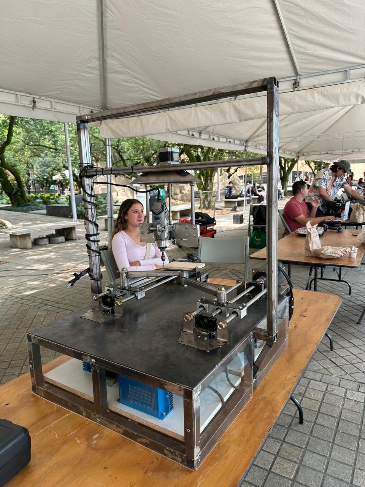

Five-bar CNC router
We built a router that moves the workpiece beneath the spindle. Two motors drive parallel carriages, and a pair of pivoted links turns their combined motion into a path in the plane.

One frame, two kinds of motion
We built a rigid steel chassis to keep the spindle support and the table guides aligned. Frame stiffness became a defining feature of our prototype. During CAD layout, we rotated the linkage and repositioned the motors to use the available space more efficiently.
The Z axis raises and lowers the tool to set the cutting depth. The five-bar linkage supplies the two planar degrees of freedom: two carriages position the table in X and Y beneath the tool. We built both connecting links with 276 mm between their pivot centres, the dimension we specified for the final prototype.
Follow one square
Our machine program specified a 50 × 50 mm square. This visualization recreates that programmed motion. Changing the path in the code lets the same linkage trace other shapes within its reachable workspace. Play the 40-second cycle or move the time slider. On a horizontal side the carriages move in opposite directions. On a side parallel to the Y guides, they travel together. The gold trace shows where the stationary cutter would mark the moving workpiece.
The plan view uses one scale for both axes. The base is 676 × 526 mm, the guides are 500 mm apart and the table is 100 × 100 mm. The square is centred at (0, −63.21) mm. The spindle sits 6.28 mm to the right of that centre. Vertical dimensions and hardware outlines in the assembly view are illustrative.
From path to carriage travel
We assigned ten seconds to each 50 mm side. A fifth-degree displacement law brings the table to zero speed and acceleration at each corner. For each table position, both links must reach the same pivot while keeping their lengths. These constraints determine how far each carriage travels.
In the calculated cycle, the carriages use 85.26–271.64 mm of their 300 mm stroke. Peak carriage speed reaches 25.04 mm/s while the table peaks at 9.375 mm/s. This difference matters when sizing the screw drives. The force and torque study uses an assumed cutting load. Physical cutting accuracy remains to be documented.
Project record
Julián Bautista, Valeria Cadavid, Juan José Salazar, Carolina Rincón and Miguel Ángel Uribe · Diseño de Mecanismos, Universidad EAFIT · 2026. Reviewed by Juan Andrés Gallego Sánchez.
Open the kinematic analysis (PDF, p. 158) · View the drawing index (p. 182)